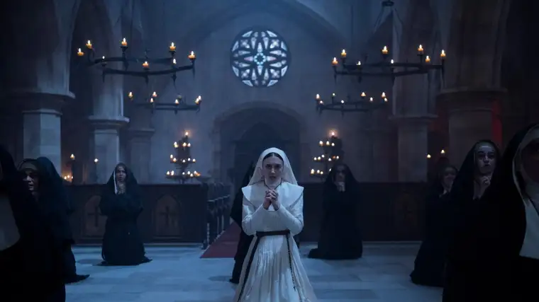
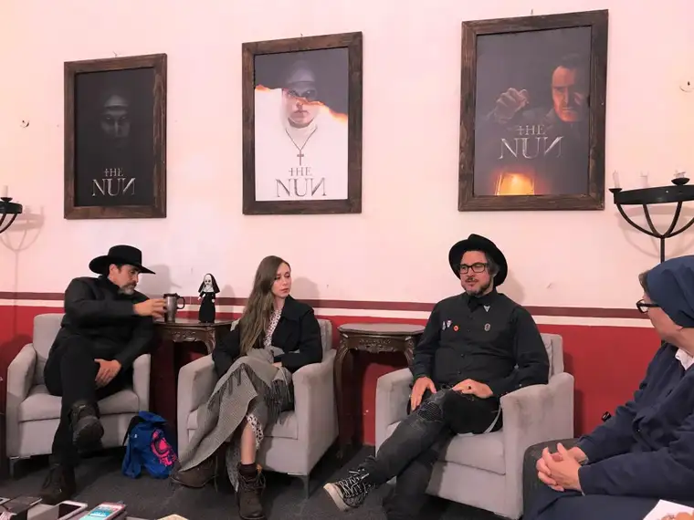
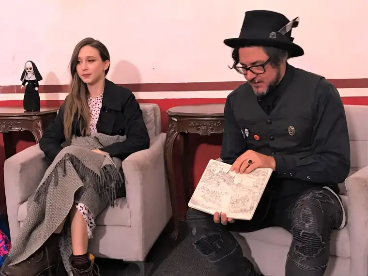

Sitting down recently at a press gathering in Mexico with a group of faith-based journalists – including this Catholic mom from North Dakota – two main characters and the director of the horror film, “The Nun,” went to the soul level, sharing how a priest was called to the set at the start of the filming in Transylvania, details of nightmares that have kept them up at night, and the interplay of story and faith.

Unlike earlier episodes in the popular The Conjuring series, which transpired around real-life happenings, “The Nun” is wholly fictional, based on a character, a demon-possessed evil nun, who makes a brief appearance in the film preceding it.
During the round-table discussion at Ex Convento Desierto de los Leones, an old Carmelite convent near Mexico City, film reviewer Sister Rose Pacatte broke the ice, commenting in lighthearted fashion to Corin Hardy, the film’s director: “A lot of nuns are going to be mad at you.”
On a more serious note, she asked Hardy how much research had gone into the film, and whether a theological consultant had been brought in, or if he’d just watched “all the old devil movies.”
Hardy admitted to the latter, due to lack of time. “I sort of plunged in when I got the job,” he said, noting that he flew straight to Romania on location to get to work in haste, adding, “We tried to give it as much respect as we could.”
The evil involved was taken seriously, he said, as evidenced by a blessing done by a Romanian priest on site in Transylvania. “He covered it in holy water,” which “seemed to have done the job.”
But Hardy said it’s his role as storyteller, rather than faith, that drives him in his work, admitting that “the real world” scares him much more than any horror film.
“I find comfort (in films) for that reason; you can go into a story,” he said, and move through the issues that arise. “The stories I tell have hope in them. It can get dark, but you find your way through it…you come out feeling you can get through it.”
He said he views “The Nun” as a positive film, in that it is “a battle between good and evil.”
The trick, of course, is to be prepared to move through frightening images and episodes to get to that good end — something some can stomach, and others wouldn’t dare.
Main characters Taissa Farmiga (Sister Irene) and Demian Bichir (Father Burke) also took part in the discussion.
Responding to Pacatte’s earlier question, Farmiga said she, too, jumped into her role quickly, and, if time were on her side, she would have loved talking to a real religious sister. Instead, online research and studying actors like Audrey Hepburn in “The Nun’s Story” helped prepare her. In this process, Farmiga said, she learned a lot about “the physicality” of a nun, how “you always have to be watching yourself, and proving yourself for the Lord, struggling to be as perfect as you can be.”
Observing nuns in action through film taught Farmiga nun nuances such as how they “walk humbly and walk close to the walls,” closing doors quietly and refraining from “engaging in useless conversation…” especially in the abbey. “I wanted to incorporate that,” Farmiga said. “I found that fascinating. I realized what dedication and emotional strength it takes to actively acknowledge your flaws as a human being, and to try to correct yourself.”

In his role as Father Burke, who accompanies Sister Irene to Carta Monastery in Romania at the Vatican’s insistence to investigate the mysterious suicide of one of its nuns, the Oscar-nominated Bichir compared the spiritual quest of conquering evil to that of a solider’s mission.
“When you become a soldier, whether of an army or a soldier of God, you know that the ultimate sacrifice will be your own life,” he said, explaining the courage required of the main characters in “The Nun” in facing down demons. “Once you’re fearless about losing your life for a greater good, you become stronger, more powerful, almost invincible. Then you can fight any demon.”
Bichir acknowledged there are many different kinds of demons. “I’m not a big horror-film fan, but I am like Father Burke in many ways. I also have my own demons, my own fears, my own doubts, my own contradictions,” he said, noting that he tried to apply that to his role. “I think it’s a beautiful journey that Father Burke goes through.”
He said the film is “also a reminder of the time we’re living right now, and a reminder of how important faith is,” and that “if we recover that…we can stand up and fight the demons.”
Hardy said the theme of death, and questioning it, has been something that has entered into his work. It became personal during an earlier film, which happened “around the time my sister’s partner died,” so he was “questioning what death is,” and finds himself still exploring this theme. “There’s a fascination,” he said. His goal, he said later, is to tell a story in a way that will excite people and allow them to “have an experience.”
When asked about their particular faith, both actors and the director seemed hesitant, but at the same time, indicated they wanted to appease their faith-based audience.
Bichir said he believes in miracles — health recoveries that are unexplained by science — and that during the filming, he began to recall time spent with his grandmother, who helped lead him to his “first encounters with religion.” “She taught me how to pray,” he said, which he did every night during the film’s shooting. “I was surprised I remembered everything — I even remembered a few things in Latin,” he said.
He then recounted, at Hardy’s prodding, a dream he’d once had of Pope John Paul II and him in a “huge fight verses the devil,” sharing how they would fight him, then take breaks, “like rounds,” and the devil would taunt him, but he was “never afraid.”
In summing up the redeeming qualities of “The Nun,” Hardy emphasized again his hope to be respectful of faith in it, noting that the film is largely about the contrast between good and evil, and how Sister Irene faces a journey that is “going to make her stronger,” and Father Burke “needs to face his own demons to give himself faith again.”
“You told me, ‘Sister Irene is afraid of the future, and Father Burke is a afraid of the past,'” offered Farmiga, bringing those roles into focus.
“Yes, and then you have this other character, Frenchie, who’s not connected to either of those things, and is just a regular dude,” Hardy said. “Together, they become this trio…”
A final point in the discussion became: What attracts people to horror films? After a pause, Pacatte said film director Wes Craven once explained it this way: “…because (those who go are) already scared and they want to go there to see a beginning, a middle and an end; they want to know they can control the outcome.”
Farmiga said she feels the attraction to the idea of good versus evil comes from the need we all have to find hope. “I think, at least I hope, that the majority of the world is good and that we can squash the negative, the evil in the world,” adding, “…it ignites that belief and faith that humankind, regardless of our faith and how different we are, in the end good is still present, and it’s something we can all choose together.”
Despite my my own days of being drawn to horror films being now long past, I appreciated the chance to view the film in the company of other faith-based journalists, and talk with these actors and the director. Private discussions among us after viewing the film led to mixed reviews. Some felt the theological holes were too glaring — a novice would not receive final vows in the way Sister Irene does, for instance. I saw it more akin to “baptism by desire,” attributing some of these discrepancies as creative license, which sometimes needs to happen in fictional renderings.
If I can offer one strong word of caution, it would surround the suicide scene at the beginning, which forms the base for the story’s narrative. To those who have experienced the suicides of family members and friends, I would warn against viewing “The Nun” and unnecessarily reliving their grief. To others attracted to this series who want to see it for themselves, I did find the ending spiritually satisfying. But again, viewers will need to brace themselves for disturbing images and portrayals of possession in order reach that.
To find more of my reactions to “The Nun” and my journey to Mexico City to preview it, see my previous piece, “Top 10 reasons why I ended up at an old convent in Mexico to preview ‘The Nun’.
Q4U: What struck you about the director’s or actors’ comments? What question would you ask them if you could?